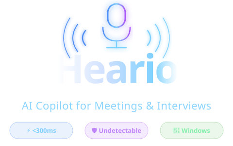

⚡ Core
Real-time Question Answering
The right answer, right when you need it — Heario listens, understands, and streams exactly what to say in under 300ms.

Heario takes perfect meeting notes and gives real-time answers, all while completely undetectable.
One AI that listens, thinks, and helps — invisibly.
The right answer, right when you need it — Heario listens, understands, and streams exactly what to say in under 300ms.
Bring your own keys or use our managed plan.
Never generic — always you.
Searchable, timestamped notes — action items, decisions and key moments, exported automatically at session end.
✦ v1.2 · Just Shipped
A whole new layer of control — type, switch, brief, and go fully offline. Watch each one work, live.
A bloom filter is a space-efficient probabilistic set. It answers "definitely not present" or "possibly present" using a bit array and k hash functions — no false negatives, tunable false positives.
One interface, your choice of brain. Drop in either key — switch mid-session, no restart.
Use a queue to decouple writes.
Use a queue to decouple writes from reads, so spikes drain smoothly instead of overwhelming the DB.
Use a queue to decouple writes from reads, so traffic spikes drain smoothly. Add idempotency keys, a dead-letter queue for poison messages, and back-pressure so producers slow when consumers lag.
Approach: queue the writes so spikes don't hit the DB directly.
Use a queue to decouple writes from reads, so traffic spikes drain smoothly instead of overwhelming the database.
Switch live mid-session. No restart required.
No meeting bots. No screen recording. Nothing visible to the other side.
Listens to what your speakers play — the interviewer's voice — via OS-level audio. No mic required.
Streaming speech-to-text with diarization. Knows who's talking. Ignores crosstalk.
Claude or GPT generates a tailored answer using your background. Streams in under a second.
An always-on-top window invisible to screen capture. Only you see it. Drag anywhere.
Heario uses a Windows API call — SetWindowDisplayAffinity — that tells the OS to exclude the overlay from all screen capture pipelines. Zoom, Teams, Google Meet, and OBS all see a blank space where Heario sits. This isn't a trick or a workaround; it's the same mechanism used by banks and DRM software to protect sensitive content.
Everything you need to know before your next interview.
No. Heario's overlay uses SetWindowDisplayAffinity(WDA_EXCLUDEFROMCAPTURE) — a Windows OS-level flag that excludes the window from all screen-capture pipelines before the frame ever reaches Zoom's encoder. The interviewer's screen share sees nothing. This is the same API used by banking apps to protect sensitive data on screen.
Never. Heario runs entirely on your local machine. There is no bot, no browser extension injected into the call, and no third-party service that touches your meeting. It listens to your speaker output using a standard Windows audio loopback — the same way recording software works — and the interviewer sees nothing unusual.
Deepgram's streaming STT delivers a transcript in under 300ms from when the interviewer finishes speaking. Claude then streams the answer token-by-token — you start reading within a second. Total time from question to first word on screen is typically 1–2 seconds in normal network conditions.
Heario keeps a rolling conversation memory of the last 4 turns. So if the interviewer says "and how would you scale that?", the AI already knows what "that" refers to and gives a contextually grounded follow-up, not a generic answer.
Yes. Bring your own API keys for OpenAI (GPT-4o) or Anthropic (Claude) in the .env file and you pay only the model's API rate — no markup. Or use our managed plan and we handle keys, rate limits, and billing.
Currently Windows-only. The undetectable overlay relies on SetWindowDisplayAffinity, a Windows-exclusive API. Mac support is on the roadmap — join the Mac waitlist to get notified.
When enabled, Heario searches the web before generating each answer, so Claude has access to current information — recent framework docs, company news, live pricing, anything that might be out of date in a model's training data. It works out of the box with no setup using DuckDuckGo. If you add a free Tavily API key in Settings, it automatically upgrades to higher-quality AI-optimised results. Toggle it on or off mid-session with the button or by pressing W.
Each mode tells Heario's AI exactly how to respond for a different situation. Technical Interview gives crisp answers to coding and system questions. Behavioral structures answers using the STAR method from your background. Sales handles objections and advances the deal in real time. Lecture captures key points as concise notes. Recruiting coaches the interviewer side — flagging weak candidate answers and suggesting follow-up questions. System Design provides architecture hints and scalability prompts. Mock Interview acts as a tough coach, pointing out weak answers and suggesting stronger phrasing. Switch between them instantly with the mode button or by pressing M.
Use Microphone for live video calls on Zoom, Teams, or Google Meet — it captures what's being said in the room or through your headset. Use System Audio to capture anything playing through your speakers, like a YouTube mock interview, a podcast, or a recorded call. You can switch between them in Settings → Audio Source and apply the change without restarting the app.
From engineers who used it in real interviews.
"I used Heario for a system design round at a FAANG company. The answers were sharp, grounded, and streamed fast enough that I could read ahead while the interviewer was still talking. Got the offer."
"Genuinely invisible. I tested it by screen-sharing to a colleague — they saw nothing. The overlay just disappears. The behavioral mode is perfect for those 'tell me about a time when...' curveballs."
"The latency is what sold me. Other tools I tried had a 3–4 second lag which made them unusable in a real conversation. Heario is there before I've even finished processing the question myself."
Start free. No card required. Use promo INSIDER20 for 20% off.
All features, annual renewal. Resume intelligence, JD analysis, negotiation coaching, 7 expert modes.
One-time purchase. All future updates included. Own it forever.